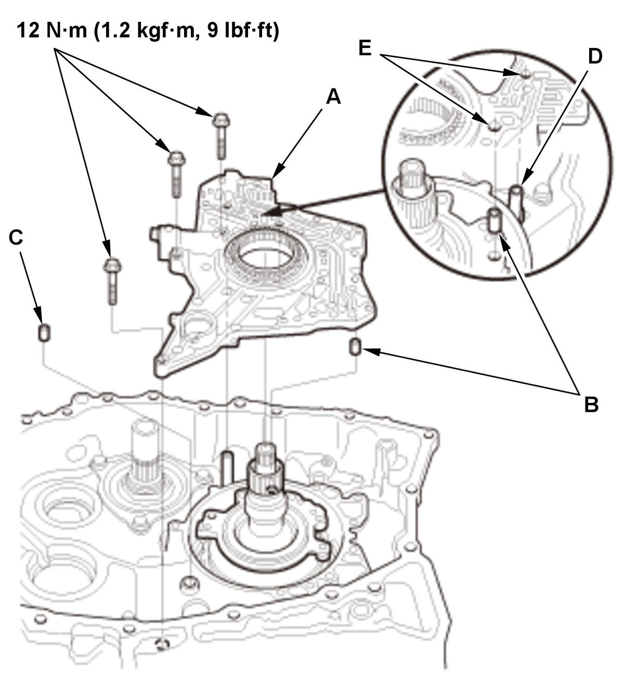
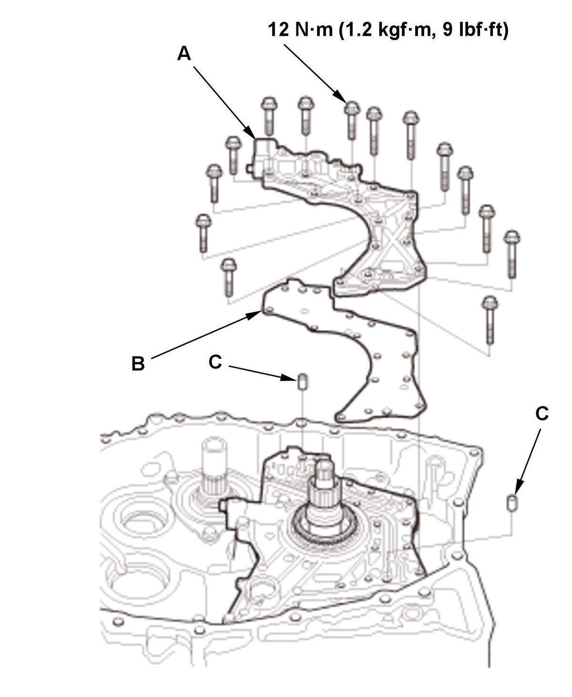
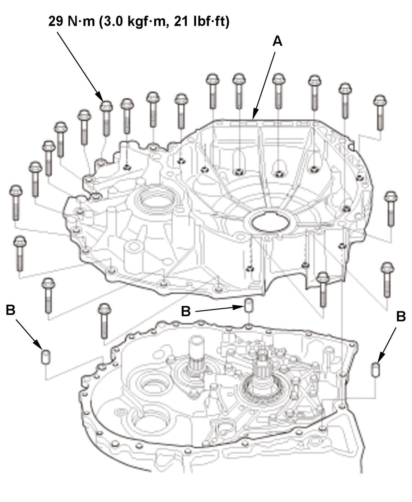

Input Shaft Thrust Clearance Adjustment (K20C2, CVT model): Adjustment
NOTE:
- If the transmission was disassembled, the input shaft thrust clearance must be adjusted.
- Apply a light coat of clean transmission fluid on all parts before installation.
- Input Shaft Thrust Clearance - Adjust
1. Install the reverse brake piston (A) with new O-rings (B). 2. Install the spring retainer/return spring (C).
3. Put the reverse brake spring compressor attachment (A) on the spring retainer/return spring assembly (B). NOTE: Be sure the attachment is set over the return springs, not on the reverse brake piston (C).
4. Install the reverse brake spring compressor plate (D) with facing the UP mark to the upside using bolts (E).
5. Make sure that the reverse brake spring compressor bolt (F) is properly installed on the dent in the surface of the reverse brake spring compressor attachment.
6. Compress the return springs using the reverse brake spring compressor until the snap ring securing the spring retainer/return spring can be installed.
7. Install a new snap ring (G).
- Be careful not to deform the snap ring by opening/closing it excessively.
- Make sure the snap ring is firmly installed in the groove.
8. Remove the reverse brake spring compressor.
9. Install the disc spring (A). NOTE: Be sure to install the disc spring with the indented mark (B) facing the upward.
10. Starting with the reverse brake plate (C), alternately install the reverse brake plates and the reverse brake discs (D).
11. Install the reverse brake end-plate (E) with the flat side toward the top disc.
12. Install a new snap ring (F).
- Be careful not to deform the snap ring by opening/closing it excessively.
- Make sure the snap ring is firmly installed in the groove.
13. Install the collar (A), the thrust washer (B), and the ring gear (C) as shown. 14. Install the thrust needle bearing (D) and the planetary carrier (E) as shown.
15. Install the sun gear (F) and the 33 x 40 mm thrust shim (G).
16. Install a new snap ring (H) using the snap ring pliers.
NOTE:
- Be careful not to deform the snap ring by opening/closing it excessively.
- Make sure the snap ring is firmly installed in the groove.
17. Install the input shaft assembly (A) by aligning the clutch discs (B) with the sun gear (C), and aligning the clutch guide (D) with the ring gear (E). 18. Install the thrust needle bearing (A), the 26 x 38.8 mm thrust shim (B), and the stator shaft (C) as shown. 19. Install the transmission fluid lubrication pipe (A) by aligning the guide tab (B) with the guide hole (C). 
Courtesy of HONDA, U.S.A., INC.20. Install the stator shaft flange (A) with the dowel pins (B) (C) by aligning the transmission fluid lubrication pipe (D) and the dowel pins (B) with the mounting holes (E). Fig 2: Manual Valve Body, Separator Plate And Dowel Pin With Torque Specifications (K20C2 - CVT Model)
Courtesy of HONDA, U.S.A., INC.21. Install the manual valve body (A) with the separator plate (B) and the dowel pin (C). 
Courtesy of HONDA, U.S.A., INC.22. Install the torque converter housing (A) with the dowel pins (B), and tighten the bolts in a crisscross pattern in at least two steps. 23. Attach the mainshaft holder and a base plate (A) to the input shaft (B) as shown.
24. Set a dial indicator (C) on the tip of the input shaft.
25. Tighten the mainshaft holder bolt (D) until it touches the base plate (E), then zero the dial indicator.
26. Measure the input shaft thrust clearance (F) by tightening the mainshaft holder bolt to lift the input shaft up.
NOTE:
- Do not tighten the mainshaft holder bolt after the needle of the dial gauge stops moving. Applying more pressure with the mainshaft holder bolt could damage the transmission.
- Take measurements in at least three places, and use the average as the actual clearance.
Standard: 0.52-0.80 mm (0.0205-0.0315 in) 27. If the clearance is out of the standard, remove the 26 x 38.8 mm thrust shim, and measure its thickness.
26 x 38.8 mm Thrust Shim
No. Thickness A 1.40 mm (0.0551 in) B 1.65 mm (0.0650 in) C 1.90 mm (0.0748 in) D 2.15 mm (0.0846 in) E 2.40 mm (0.0945 in) 28. Install a selected 26 x 38.8 mm thrust shim, then recheck the thrust clearance.